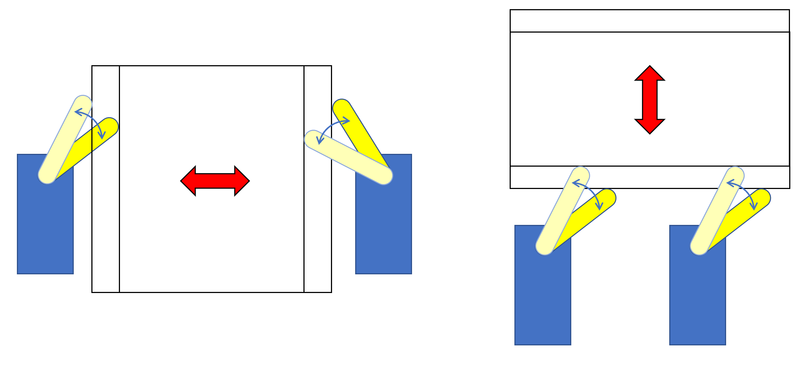

MultiplaneGirl 絵に命を吹き込む一手法
組み立てに使用した3Dモデルデータ，プログラム，設計用システムがダウンロードできます
ダウンロード概要
キャラクタが指を指した方向を向いたようにみえるシステムを作成した．
絵をPCなどで描く時，パーツごとにレイヤを分ける場合がある．本システムはそのレイヤをアクリル板に分けて重ねて配置した．更にそれぞれのレイヤを独立上下左右に平行移動させることによって絵に立体感をもたせることに成功した．
同様の手法を用いたものとして，セルアニメーションのマルチプレーンカメラ [1]や，ソフトウェア上ではLive2D [2]などが挙げられる．
簡単な解説
アクリル板を約7mm感覚で配置している．前髪，目（の枠）・口，瞳，顔の輪郭にわけてアクリル板にホワイトボードマーカーで描きこんでおり，これにより立体感を出している．
一つのレイヤ（アクリル板）につき4つのサーボモータで平行移動を担っている．左右にそれぞれ1つの，下に2つのサーボモータを設置している．

サーボモータの動き
制作方法
正直著者が時間短縮のため（嘘 サボって）まともに設計しなかったため，使用した素材や画像を紹介するに留める．設計図のようなものは上記Githubに上がっているrealLive2DSimulatorを起動していただきたい
部品表
| 商品名 | 説明 | プラ材 5mm角棒 （6本入） | フレームとして使用．2セット使った記憶があり． | SG90 | サーボモータ．16個使用 | Ｉ２Ｃ接続１６チャンネル サーボ＆ＰＷＭ駆動キット | PCA9685． 秋月電子で購入可能． | アクリル板 | 4枚．大きさはsimulatorのmeasure参照． はざいやで大きさを決めて発注すると楽． | その他 | 電池ボックスには単３電池4本直列のものを使用．マイコンはArduinoを使用．著者が使用しているのは A-Star 32U4 Mini LVである．これは電源を(何もせずに)サーボと共通化できる（2.8～11.7Vで動く）ためである． |
|---|
組み立て時画像一覧（準備中）
基本的にはサーボの取り付け部分にプラ棒をアロンアルファでくっつける，のを層によってずらしていくだけである．
若干投げやりだが，ここの画像を見て解析して作って欲しい．質問あればTwitterのリプライなどでどうぞ．
参考文献
- マルチプレーン・カメラ.
- Live2D. www.live2d.com